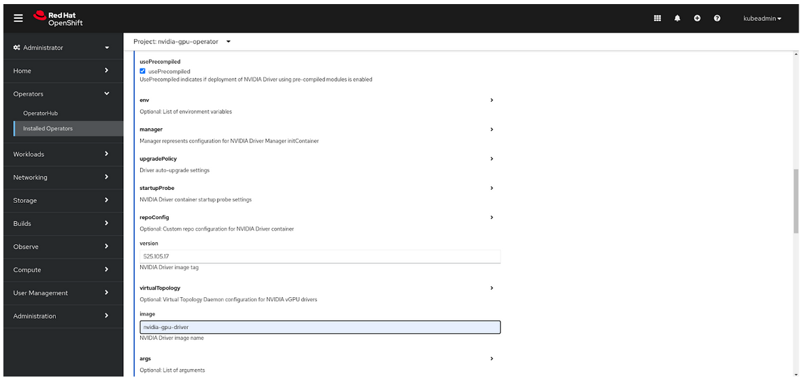
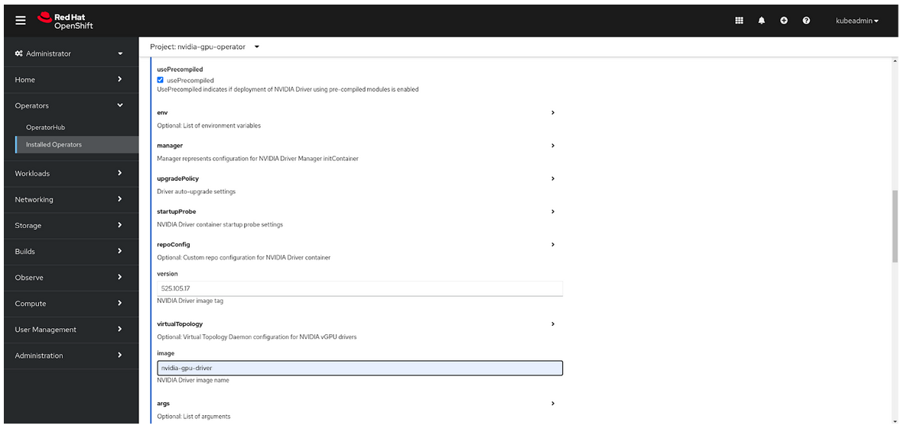

Precompiled Drivers for the NVIDIA GPU Operator for RHCOS#
Note
Technology Preview features are not supported in production environments and are not functionally complete. Technology Preview features provide early access to upcoming product features, enabling customers to test functionality and provide feedback during the development process. These releases may not have any documentation, and testing is limited.
About Precompiled Driver Containers#
By default, NVIDIA GPU drivers are built on the cluster nodes when you deploy the GPU Operator. Driver compilation and packaging is done on every Kubernetes node, which leads to bursts of compute demand, waste of resources, and long provisioning times. In contrast, using container images with precompiled drivers makes the drivers immediately available on all nodes, resulting in faster provisioning and cost savings in public cloud deployments.
Limitations and Restrictions#
NVIDIA does not provide precompiled driver images for Red Hat OpenShift. Such images have to be custom built and hosted in a public or private image registry.
NVIDIA provides limited support for custom driver container images.
Precompiled driver containers do not support NVIDIA vGPU or GPUDirect Storage (GDS).
Precompiled driver container images for Red Hat OpenShift Container Platform have been tested with the following versions:
4.12 (RHEL 8.6)
4.13 (RHEL 9.2)
Building a Precompiled Driver Image#
Perform the following steps to build a custom driver image for use with Red Hat OpenShift Contain Platform.
Prerequisites
You have access to a container registry, such as NVIDIA NGC Private Registry, Red Hat Quay, or the OpenShift internal container registry, and can push container images to the registry.
You have a valid Red Hat subscription with an activation key.
You have a Red Hat OpenShift pull secret.
Your build machine has access to the internet to download operating system packages.
You know a CUDA version, such as
12.1.0, that you want to use.One way to find a supported CUDA version for your operating system is to access the NVIDIA GPU Cloud registry at CUDA | NVIDIA NGC and view the tags. Use the search field to filter the tags, such as
base-ubi8for RHEL 8 andbase-ubi9for RHEL 9. The filtered results show the CUDA versions, such as12.1.0,12.0.1,12.0.0, and so on.You know the GPU driver version, such as
525.105.17, that you want to use.
Procedure
Clone the driver container repository:
$ git clone https://gitlab.com/nvidia/container-images/driverChange the directory to
rhel8/precompiledunder the cloned repository. You can build precompiled driver images for versions 8 and 9 of RHEL from this directory:$ cd driver/rhel8/precompiled
Create a Red Hat Customer Portal Activation Key and note your Red Hat Subscription Management (RHSM) organization ID. These are to install packages during a build. Save the values to files, for example,
$HOME/rhsm_organd$HOME/rhsm_activationkey:export RHSM_ORG_FILE=$HOME/rhsm_org export RHSM_ACTIVATIONKEY_FILE=$HOME/rhsm_activationkey
Download your Red Hat OpenShift pull secret and store it in a file, for example,
${HOME}/pull-secret:export PULL_SECRET_FILE=$HOME/pull-secret.txtSet the Red Hat OpenShift version and target architecture of your cluster, for example,
x86_64:export OPENSHIFT_VERSION="4.12.13" export TARGET_ARCH="x86_64"
Determine the Driver Toolkit (DTK) image for your target Red Hat OpenShift version and architecture:
export DRIVER_TOOLKIT_IMAGE=$(oc adm release info -a $HOME/pull-secret.txt --image-for=driver-toolkit quay.io/openshift-release-dev/ocp-release:${OPENSHIFT_VERSION}-${TARGET_ARCH})Determine the RHEL and kernel versions of your target OpenShift cluster:
export RHEL_VERSION=$(podman run --authfile $HOME/pull-secret.txt --rm -ti ${DRIVER_TOOLKIT_IMAGE} cat /etc/driver-toolkit-release.json | jq -r '.RHEL_VERSION')export RHEL_MAJOR=$(echo "${RHEL_VERSION}" | cut -d '.' -f 1)export KERNEL_VERSION=$(podman run --authfile $HOME/pull-secret.txt --rm -ti ${DRIVER_TOOLKIT_IMAGE} cat /etc/driver-toolkit-release.json | jq -r '.KERNEL_VERSION')Set environment variables for the driver and CUDA versions, as well as the image:
export CUDA_VERSION=12.1.0 export CUDA_DIST=ubi${RHEL_MAJOR} export DRIVER_EPOCH=1 export DRIVER_VERSION=525.105.17 export OS_TAG=rhcos4.12
Build and push the image:
make image image-push
Optionally, override the IMAGE_REGISTRY, IMAGE_NAME, and CONTAINER_TOOL. You can also override BUILDER_USER and BUILDER_EMAIL if you want, otherwise your Git username and email are used. See the Makefile for all available variables.
Note
Do not set the DRIVER_TYPE. The only supported value is currently passthrough, which is set by default.
Enabling Precompiled Driver Container Support#
Prerequisites
You installed the NVIDIA GPU Operator. Refer to Installing the NVIDIA GPU Operator on OpenShift.
Using the Web Console#
In the OpenShift Container Platform web console, from the side menu, select Operators > Installed Operators, and click NVIDIA GPU Operator.
Select the ClusterPolicy tab, then click Create ClusterPolicy. The platform assigns the default name gpu-cluster-policy.
Open the Driver section.
Check the usePrecompiled checkbox.
Specify values for repository, version, and image.
 

Select Create.
{kind=link}
Using the YAML File#
Use the procedure Create the cluster policy using the web console to create a cluster policy. Switch to the YAML view while creating the
ClusterPolicyresource.Add precompiled driver image properties:
spec: driver: usePrecompiled: true image: <image_name> repository: <image_registry> version: <driver_version>
Provide values for
image,repository, andversion. For example:spec: driver: usePrecompiled: true image: nvidia-gpu-driver repository: quay.io/nvidia-gpu-driver-example version: 525.105.17
Using the CLI#
Create a template for the
ClusterPolicyresource. Replace the NVIDIA GPU operator version with your value:$ oc get csv -n nvidia-gpu-operator gpu-operator-certified.v23.6.1 -ojsonpath={.metadata.annotations.alm-examples} | jq '.[0]' > clusterpolicy.json
Modify the
clusterpolicy.jsonfile to specify values fordriver.usePrecompiled,driver.repository,driver.imageanddriver.version. For example:"driver": { "usePrecompiled": true, "repository": "quay.io/nvidia-gpu-driver-example", "image": "nvidia-gpu-driver", "version": "525.105.17" }
Create a
ClusterPolicyresource from the modifiedclusterpolicy.jsonfile:$ oc apply -f clusterpolicy.jsonExample Output
clusterpolicy.nvidia.com/gpu-cluster-policy createdConfirm that the driver container pods are running:
$ oc get pods -l app=nvidia-driver-daemonset -n nvidia-gpu-operator
Example Output
NAME READY STATUS RESTARTS AGE nvidia-driver-daemonset-4.18.0-372.51.1.el8_6-rhcos4.12-mlpd4 1/1 Running 0 44s
Ensure that the pod names include a Linux kernel version number like
4.18.0-372.51.1.el8_6.
Disabling Support for Precompiled Driver Containers#
Perform the following steps to disable support for precompiled driver containers.
Disable precompiled driver support by modifying the cluster policy:
$ oc patch clusterpolicy/gpu-cluster-policy --type='json' \ -p='[{"op": "replace", "path": "/spec/driver/usePrecompiled", "value":false},{"op": "remove", "path": "/spec/driver/version"},{"op": "remove", "path": "/spec/driver/image"},{"op": "remove", "path": "/spec/driver/repository"}]'
Example Output
clusterpolicy.nvidia.com/gpu-cluster-policy patchedConfirm that the conventional driver container pods are running:
$ oc get pods -l openshift.driver-toolkit=true -n nvidia-gpu-operator
Example Output
NAME READY STATUS RESTARTS AGE nvidia-driver-daemonset-412.86.202303241612-0-f7v4t 2/2 Running 0 4m20s
Ensure that the pod names do not include a Linux kernel semantic version number.